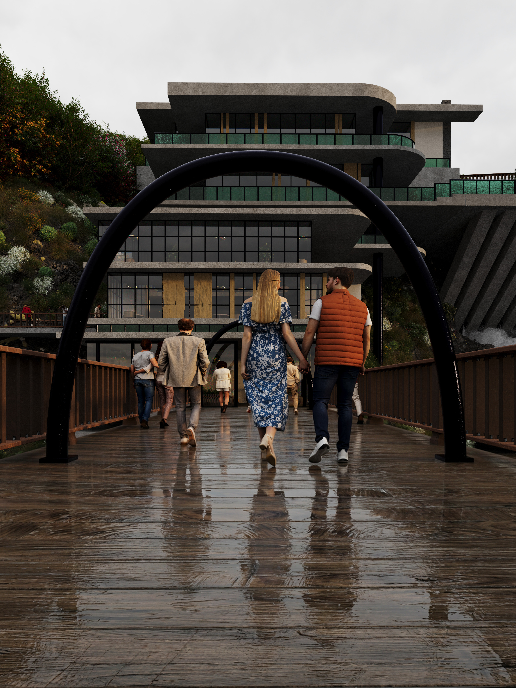

The Fiordland Ascent
A Conceptual Architectural Documentary
Concept
The Fiordland Ascent explores the dialogue between architecture and landscape — a structure carved into terrain, suspended between earth, sky, and possibility. The project examines movement, arrival, compression, and release through a cinematic architectural language.
01
02
03
04
05
06
07
08


